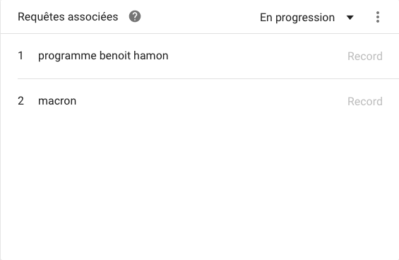
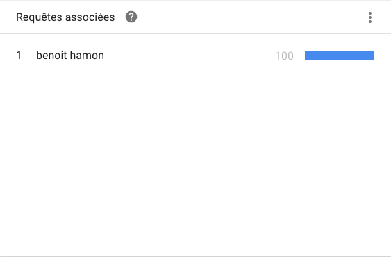

Les recherches autour des candidats sont réparties en deux groupes :
* En progression (par défaut) : il s'agit de requêtes connexes présentant une forte augmentation du nombre de recherches depuis la période précédente. Les résultats signalés par la mention "Record" correspondent à une augmentation très importante, probablement parce que ces requêtes sont nouvelles et qu'elles n'ont pas fait l'objet de beaucoup de recherches (voire pas du tout) jusqu'à présent.

* Les plus fréquentes : il s'agit des requêtes de recherche les plus populaires. La valeur 100 correspond à la requête ayant fait l'objet du plus grand nombre de recherches. Une valeur de 50 correspond à une requête pour laquelle les internautes ont effectué moitié moins de recherches, et une valeur de 0 correspond à une requête pour laquelle ils ont effectué moins de 1 % de recherches, par rapport à celle qui a fait l'objet du plus grand nombre de recherches.
